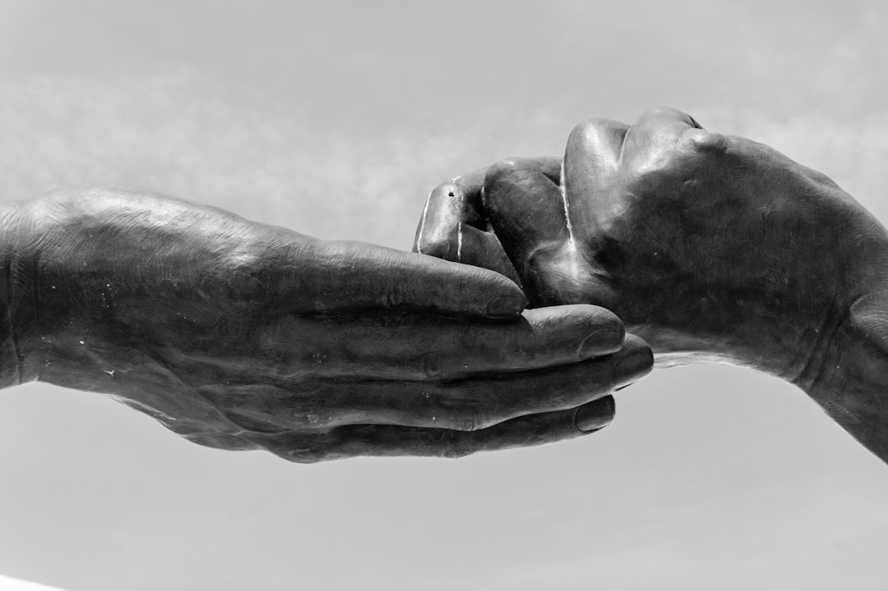

Asociación Vidas Libres
Por una vida libre de violencia
Creemos en un mundo donde todas las personas puedan vivir con dignidad, respeto y libertad.
Juntas y juntos podemos prevenir y erradicar la violencia de género.

Accesos directos
Pide Ayuda |
Qué es la violencia de género |
Noticias |
Educación y Prevención
¿Qué es la violencia de género?
La violencia de género es aquella que se ejerce sobre las mujeres por razón de su género. Es una manifestación de la discriminación y las relaciones de poder desiguales.
Tipos de violencia
- Física: Cualquier acto de fuerza con riesgo de lesión física
- Psicológica: Amenezas, humillaciones y conductas de desvalorización
- Sexual: Cualquier acto de naturaleza sexual forzada o no consentida
- Económica: Privación de recursos económicos
- Digital: Ciberacoso, control de redes sociales
- Simbólica: Transmisión de patrones estereotipados que reproducen dominación
Datos importantes
- 1 de cada 3 mujeres ha sufrido violencia física o sexual en el mundo (OMS)
- 016 - Llamadas atendidas: Miles de llamadas atendidas cada año en España
- Prevención desde la educación: La educación en igualdad es clave para erradicar la violencia
Enlaces de interés
Pide Ayuda
Teléfonos de emergencia:
016 - Atención a víctimas (24 horas y gratuito)
112 - Emergencias
091 - Policía Nacional
062 - Guardia Civil
Consejos de seguridad digital:
- Utiliza contraseñas seguras y cámbialas periódicamente
- Revisa la privacidad de tus redes sociales
- No compartas tu ubicación en tiempo real
- Borra el historial de navegación después de pedir ayuda
- Bloquea contactos no deseados
¿Como ayudar a una persona cercana?
Si conoces a alguien que puede estar sufriendo violencia de género:
- Escucha sin juzgar y ofrece tu apoyo
- No la obligues a tomar decisiones
- Respeta sus tiempos y decisiones
- Ayúdale a identificar recursos de ayuda
- Acompañala si te lo pide
- No confrontes a la persona agresora
- Mantén el contacto
Noticias
25 de Noviembre: Día Internacional contra la Violencia de Género
Fecha: 25 de Noviembre de 2025
Únete a las actividades conmemorativas en tu ciudad. Manifestaciones, charlas y actos de sensibilización en toda España para visibilizar la lucha contra la violencia de género
Nueva campaña "No estés sola"
Fecha: 25 de Octubre de 2025
Lanzamiento de la nueva campaña de sensibilización dirigida especialmente a jóvenes. Incluye materiales educativos y testimonios reales para prevenir la violencia de género desde edades tempranas.
Jornadas de formación para profesionales
Fecha: 10 de Octubre de 2025
Formación especializada para profesionales sanitarios, educativos y servicios sociales sobre detección precoz y atención a víctimas de violencia de género.
Educación y Prevención
La prevención es fundamental para erradicar la violencia de género. La educación en igualdad desde edades tempranas es la clave del cambio.
Recursos educativos disponibles
- Guía "Amor sin control" Para adolescentes de 12 a 18 años (descargable en PDF)
- Serie de vídeos "Relaciones sanas" 10 capítulos de 5 minutos en YouTube
- Taller "El amor no duele" Sesiones de 2 horas en institutos de Sevilla
- Cuaderno de actividades "Igualdad en casa" Dinámicas para primaria y ESO
- Charla "Respeto y límites" Conferencias mensuales en centros educativos
- Guía para familias "Cómo hablar de igualdad con tus hijos e hijas"
Actividades de prevención programadas
- Jueves 20 de noviembre, 18:00h Taller "Detecta el maltrato digital" en IES Murillo (Sevilla)
- Sábado 22 de noviembre, 11:00h Charla para familias "Educar en igualdad" en Centro Cívico Cerro del Águila
- Lunes 24 de noviembre, 17:00h Taller para jóvenes "Amor sin control" en Casa de la Juventud
- Martes 25 de noviembre Actividades del Día Internacional contra la Violencia de Género
Para más información o inscripciones, consulta la sección de Contacto
Testimonios
Nota importante: Los siguientes testimonios son anónimos y compartidos con el consentimiento de las personas. Respetamos su valentía al compartir sus experencias para ayudar a otras personas
M., 34 años
"Después de años de maltrato psicológico, decidí pedir ayuda. El 016 me orientó y me puso en contacto con profesionales que me ayudaron a recuperar mi autoestima. Hoy he recuperado mi vida y mi dignidad. A todas las mujeres que están pasando por esto: no están solas, hay salida y hay personas dispuestas a ayudar."
L., 28 años
"El primer paso fue reconocer que estaba en una relación tóxica. Los celos, el control, las humillaciones... pensé que era normal. Gracias a la ayuda profesional y al apoyo de mi familia, pude salir adelante. Ahora ayudo a otras mujeres a identificar las señales de alerta."
S., 42 años
"Durante 15 años sufrí violencia física y psicológica. Tenía miedo, vergüenza y me sentía culpable. Un día, una trabajadora social me habló de los recursos disponibles. Fue el inicio de mi liberación. Hoy tengo una vida nueva y quiero que otras mujeres sepan que se puede salir."
Iniciativas y Puntos Violeta
¿Qué son los Puntos Violeta?
Los Puntos Violeta son espacios seguros de información, acompañamiento y sensibilización contra la violencia de género. Se encuentran en lugares públicos y accesibles como centros comerciales, bibliotecas, farmacias, centros de salud y espacios culturales.
¿Qué ofrecen los Puntos Violeta?
- Información sobre recursos disponibles para víctimas
- Material divulgativo sobre prevención de la violencia de género
- Orientación sobre teléfonos y servicios de emergencia
- Espacio seguro y de confianza
- Derivación a servicios especializados si es necesario
Localizador de Puntos Violeta en Sevilla:
- Centro Comercial Nervión Plaza - C/Luis de Morales, 3
- Biblioteca Provincial Infanta Elena - Av. María Luisa, s/n
- Farmacia Plaza Nueva - Plaza Nueva, 7
- Centro de Salud Los Remedios - Av. de la República Argentina, 34
- Casa de la Cultura Triana - C/Castilla, 20
- Mercado de Triana - Plaza del Altozano, s/n
Otras iniciativas de la asociación:
- Campaña "Rompe el silencio": Publicaciones diarias en Instagram y Facebook, carteles en Metro de Sevilla
- Talleres en centros educativos: 25 institutos de Sevilla, más de 3000 estudiantes formados en 2024
- Grupo de apoyo mutuo: Reuniones cada primer martes de mes a las 18:00h (C/San Fernando, 25)
- Formación a profesionales: Cursos para médicos, enfermeras, profesorado y trabajadores sociales
- Actividades del 25N: Manifestación, lectura de manifiesto, actividades infantiles, puestos informativos
Contacto
Asociación Vidas Libres
Somos una asociación sin ánimo de lucro dedicada a la prevención y erradicación de la violencia de género
Trabajamos por una sociedad igualitaria donde todas las personas puedan vivir libres de violencia
Datos de Contacto
- Email: contacto@vidaslibres.org
- Teléfono de información: 900 123 456 (lunes a viernes, 9:00 - 18:00h)
- Dirección: C/San Fernando, 25 - 41004 Sevilla
- Horario de atención presencial: Lunes a viernes de 10:00 a 14:00h y de 16:00 a 19:00h
¿Cómo colaborar?
- Hazte socio/a: Recibirás información y descuentos en nuestras actividades
- Voluntariado: Necesitamos apoyo en talleres, eventos y atención telefónica (formación incluida)
- Difusión en redes: Comparte nuestras publicaciones
- Participa: Asiste a nuestras charlas, manifestaciones y eventos de sensibilización
- Empresas: Colabora con talleres en tu empresa o patrocinio de eventos
Redes Sociales
- Facebook: @VidasLibresAsociacion
- Twitter: @VidasLibres
- Instagram: @vidaslibres_oficial